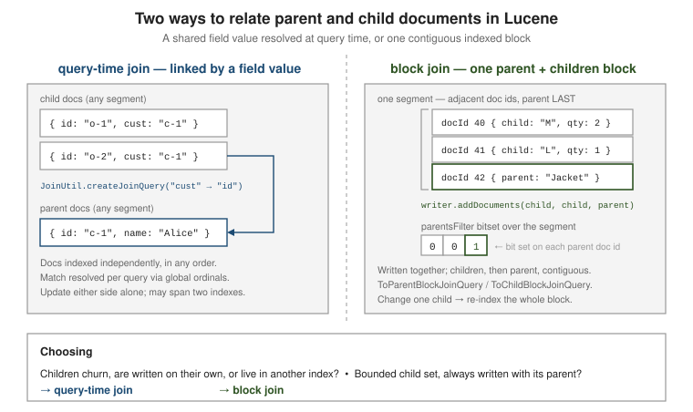

Grouping & joins
|
This content was generated with the assistance of AI and should be verified against the official documentation before being relied on in production. |
Lucene has no tables and no GROUP BY, but two modules cover the same ground: lucene-grouping
collapses a flat hit list into per-key groups (like SQL grouping or a "collapse" feature), and
lucene-join relates one set of documents to another either at query time through a shared field
value or at index time through a contiguous parent/children block.
The examples use the book catalogue. Grouping collapses hits by category; the query-time join relates review documents to book documents through the ISBN; the block join stores each book together with its editions (paper, ebook). All outputs were produced by running the code on Lucene 10.4.0.
Result grouping (lucene-grouping)
GroupingSearch is the high-level entry point. Point it at a SortedDocValues /
SortedSetDocValues field and it returns TopGroups — the top N groups, each with its own top
k documents.
<dependency>
<groupId>org.apache.lucene</groupId>
<artifactId>lucene-grouping</artifactId>
<version>10.4.0</version>
</dependency>// https://lucene.apache.org/core/10_0_0/grouping/org/apache/lucene/search/grouping/GroupingSearch.html
import org.apache.lucene.search.grouping.GroupingSearch;
import org.apache.lucene.search.grouping.TopGroups;
import org.apache.lucene.search.grouping.GroupDocs;
import org.apache.lucene.search.Sort;
import org.apache.lucene.util.BytesRef;
// field "category" indexed with new SortedDocValuesField("category", new BytesRef(name))
GroupingSearch grouping = new GroupingSearch("category");
grouping.setGroupSort(Sort.RELEVANCE); // order of the groups
grouping.setSortWithinGroup(Sort.RELEVANCE); // order of docs inside each group
grouping.setGroupDocsLimit(2); // top 2 hits per group
grouping.setAllGroups(true); // also count the total number of distinct groups
grouping.setIncludeMaxScore(true); // record the best score of each group
Query query = new QueryParser("body", analyzer).parse("java OR search OR storage OR databases");
TopGroups<BytesRef> groups = grouping.search(searcher, query, 0 /* groupOffset */, 10 /* topNGroups */);
System.out.println("total hits=" + groups.totalHitCount + " totalGroupCount=" + groups.totalGroupCount);
for (GroupDocs<BytesRef> g : groups.groups) { // groups is a public array field
System.out.println(g.groupValue().utf8ToString() + " (" + g.totalHits().value() + " hits)");
for (ScoreDoc sd : g.scoreDocs()) { /* sd.doc, sd.score */ }
}TopGroups exposes its data as public fields (groups, totalHitCount, totalGroupedHitCount,
totalGroupCount), while GroupDocs is a record, so its members are read with accessor methods
(groupValue(), totalHits(), scoreDocs(), maxScore()); code written for older releases that read
g.groupValue or g.totalHits.value() no longer compiles. On the catalogue:
total hits=8 groupedHits=8 totalGroupCount=3
group databases hits=2 maxScore=1.626
1.626 Database Internals
0.717 Designing Data-Intensive Applications
group programming hits=3 maxScore=0.714
0.714 Head First Java
0.699 Effective Java
group search hits=3 maxScore=0.519
0.519 Solr in Action
0.519 Introduction to Information RetrievalEight books matched, in three groups. Groups are ordered by the best score in each (1.626, 0.714,
0.519); within a group the books are ordered by score and cut at the limit of two, so hits=3 for
programming and search while only two documents are listed. Change the two sorts to order by a
field and the meaning changes with them. Ordering both groups and members by descending popularity
returns the most popular book of each group, in the order of the groups' best sellers:
groups by best popularity: programming->Effective Java; databases->Designing Data-Intensive Applications; search->Introduction to Information RetrievalFirst pass and second pass
GroupingSearch runs the query twice. The first pass
(FirstPassGroupingCollector) finds which groups have the best-scoring documents; the second pass
(TopGroupsCollector) re-runs the query knowing those groups and fills in the top k documents and
hit counts for each. Drive the passes directly when you need to slot grouping into a custom
CollectorManager pipeline:
// https://lucene.apache.org/core/10_0_0/grouping/org/apache/lucene/search/grouping/FirstPassGroupingCollector.html
import org.apache.lucene.search.grouping.*;
import org.apache.lucene.search.Sort;
import org.apache.lucene.util.BytesRef;
import java.util.Collection;
GroupSelector<BytesRef> selector = new TermGroupSelector("category");
FirstPassGroupingCollector<BytesRef> first =
new FirstPassGroupingCollector<>(selector, Sort.RELEVANCE, 10);
searcher.search(query, first);
Collection<SearchGroup<BytesRef>> topGroups = first.getTopGroups(0);
TopGroupsCollector<BytesRef> second = new TopGroupsCollector<>(
selector, topGroups, Sort.RELEVANCE, Sort.RELEVANCE,
3 /* maxDocsPerGroup */, true /* getMaxScores */);
searcher.search(query, second);
TopGroups<BytesRef> result = second.getTopGroups(0);On the catalogue the first pass returns three groups and the second pass fills each with up to three
documents. The cost of grouping is the second pass: the query is evaluated twice, which
GroupingSearch.setCaching can reduce by caching the first-pass hits in memory.
Grouping by document block
If the grouping key is fixed at index time and each group’s documents were written together with
IndexWriter.addDocuments, grouping needs no doc-values field and no first pass — construct
GroupingSearch from a Query that matches the last document of every block:
// blocks written as: members..., the last member carries the marker field.
Map<String, List<Document>> blocks = ...; // category -> its book documents
for (List<Document> block : blocks.values()) {
block.get(block.size() - 1).add(new StringField("groupEnd", "x", Field.Store.NO));
writer.addDocuments(block); // one contiguous block per category
}
// The GroupingSearch(Query) constructor takes a query matching each block's LAST doc.
GroupingSearch blockGrouping = new GroupingSearch(new TermQuery(new Term("groupEnd", "x")));
blockGrouping.setGroupDocsLimit(2);
TopGroups<?> byBlock = blockGrouping.search(searcher, query, 0, 10);block grouping groups=3
group (key=null) hits=2: Database Internals | Designing Data-Intensive Applications |
group (key=null) hits=3: Head First Java | Effective Java |
group (key=null) hits=3: Solr in Action | Introduction to Information Retrieval |The same three groups appear, but a block group has no group value (key=null): its identity is the
position of the block, not a field. Keep the category in a stored field of the documents if you need it
back.
The lucene-grouping module overview lists
every collector and selector. Solr’s Result Grouping and the collapse query parser
(Solr query parsers) are built on this module.
Relating documents (lucene-join)

<dependency>
<groupId>org.apache.lucene</groupId>
<artifactId>lucene-join</artifactId>
<version>10.4.0</version>
</dependency>Query-time joins
JoinUtil.createJoinQuery turns the request documents whose toField value matches the fromField value of a
document that satisfies fromQuery into a single Query. The two document sets are indexed
independently, in any order, and the join is resolved per query from the field’s doc values.
The catalogue has two kinds of documents in one index: books (field isbn) and reviews (field
bookIsbn, pointing at a book). "The books that have a review saying excellent" is a join from the
reviews to the books:
// https://lucene.apache.org/core/10_0_0/join/org/apache/lucene/search/join/JoinUtil.html
import org.apache.lucene.search.join.JoinUtil;
import org.apache.lucene.search.join.ScoreMode;
// review docs: new KeywordField("bookIsbn", isbn, Field.Store.NO), a TextField "review"
// book docs: new KeywordField("isbn", isbn, Field.Store.NO), a TextField "title"
Query reviewQuery = new TermQuery(new Term("review", "excellent"));
Query booksWithExcellentReview = JoinUtil.createJoinQuery(
"bookIsbn", // fromField (on the review docs matched by reviewQuery)
true, // multiple values per document? true for KeywordField (SortedSet doc values)
"isbn", // toField (on the book docs to return)
reviewQuery,
searcher, // searcher over the index holding the review docs
ScoreMode.Max); // how review scores roll up: None, Min, Max, Avg, Total
TopDocs books = searcher.search(booksWithExcellentReview, 20);The flag that says whether the join field has multiple values per document must match the doc values
type. KeywordField stores SORTED_SET doc values, so pass true; pass false only for a field
written as a SortedDocValuesField (typically next to a StringField). The wrong choice fails at join
time with an error such as unexpected docvalues type SORTED_SET for field 'bookIsbn' (expected=SORTED).
join None -> Effective Java(1.000) Lucene in Action(1.000) Designing Data-Intensive Applications(1.000)
join Total -> Effective Java(0.308) Lucene in Action(0.308) Designing Data-Intensive Applications(0.308)
join Max -> Effective Java(0.308) Lucene in Action(0.308) Designing Data-Intensive Applications(0.308)Three books have a review containing excellent. ScoreMode.None makes the join a pure filter
(constant score 1.0, fastest); the other modes carry the review’s BM25 score to the book, aggregated
over the matching reviews. Here each book has exactly one matching review, so Total and Max agree.
Effective Java has two reviews but only one says excellent; the second one is irrelevant to the
score. Other createJoinQuery overloads take a numeric join field (the numeric type is passed
explicitly), or a pair of queries and an OrdinalMap built over a MultiReader. The cost is
per-query work to collect the from-side values and memory proportional to the number of distinct
join values.
Query j = JoinUtil.createJoinQuery("bookIsbn", true, "isbn", reviewQuery, searcher, ScoreMode.None);
System.out.println(j.getClass().getSimpleName()); // TermsQueryThe result is an ordinary TermsQuery over the collected values, so it can be a FILTER clause or be
combined with other queries.
Index-time block joins
A block join is much faster because the relationship is baked into doc-id adjacency. Write a parent
and all of its children in one addDocuments call, parent last; the children get consecutive doc
ids immediately before the parent’s.
The parents bit set marks doc 2, doc 5, and so on; every document up to and including a parent belongs to it, back to the previous parent. Both directions of the join are a lookup in that bit set, with no global ordinals involved.
// https://lucene.apache.org/core/10_0_0/join/org/apache/lucene/search/join/ToParentBlockJoinQuery.html
import org.apache.lucene.search.join.*;
import org.apache.lucene.document.*;
import org.apache.lucene.index.Term;
import org.apache.lucene.search.*;
import java.util.ArrayList;
import java.util.List;
for (Books.Book b : books) {
List<Document> block = new ArrayList<>();
for (String[] e : new String[][] {{"paper", "45.00"}, {"ebook", "30.00"}}) {
Document edition = new Document();
edition.add(new StringField("docType", "edition", Field.Store.NO));
edition.add(new StringField("format", e[0], Field.Store.YES));
edition.add(new DoubleField("edPrice", Double.parseDouble(e[1]), Field.Store.YES));
block.add(edition);
}
Document parent = new Document();
parent.add(new StringField("docType", "book", Field.Store.NO));
parent.add(new TextField("title", b.title(), Field.Store.YES));
block.add(parent); // parent LAST
writer.addDocuments(block); // one contiguous block
}
// a filter selecting the parent doc of every block
BitSetProducer parents = new QueryBitSetProducer(new TermQuery(new Term("docType", "book")));
// children -> parents: books that have an ebook edition cheaper than 33
Query childQ = new BooleanQuery.Builder()
.add(new TermQuery(new Term("format", "ebook")), BooleanClause.Occur.MUST)
.add(DoubleField.newRangeQuery("edPrice", 0, 33.0), BooleanClause.Occur.MUST)
.build();
Query toParent = new ToParentBlockJoinQuery(childQ, parents, ScoreMode.Max);
// parents -> children: the editions of every book whose title has "java"
Query toChild = new ToChildBlockJoinQuery(new TermQuery(new Term("title", "java")), parents);
// the children of one already-known parent doc id
Query children = new ParentChildrenBlockJoinQuery(parents, new MatchAllDocsQuery(), knownParentDocId);Running it on the ten books (each with two editions, 30 documents in all):
CheckJoinIndex: ok, maxDoc=30
books with ebook edition <= 33: Effective Java; Lucene in Action; Head First Java; Designing Data-Intensive Applications; Database Internals;
children of title:java parents (format): paper ebook paper ebook paper ebook
parent doc id=2
children of that parent: 0:paper 1:ebookThe first query returns parent documents whose child matched; the second returns child documents
of the parents that matched, three books times two editions; the third lists the two children (doc 0
and doc 1) that precede the parent at doc 2. A parent’s own fields are not searched by the child
query, and vice versa: each side is matched against its own documents and only the relation is
joined. ToParentBlockJoinQuery takes a ScoreMode (None, Avg, Max, Min, Total) for how
the children’s scores combine into the parent’s.
Because block membership is positional, changing one child means re-indexing the whole block (delete
by a shared key, addDocuments again). After building or merging such an index, validate that every
block is intact:
// https://lucene.apache.org/core/10_0_0/join/org/apache/lucene/search/join/CheckJoinIndex.html
import org.apache.lucene.search.join.CheckJoinIndex;
CheckJoinIndex.check(reader, parents); // throws IllegalStateException if any block is malformedAdding a lone child document (an edition with no parent after it) and merging the index makes the check fail with a precise message:
CheckJoinIndex failed: The last document of a segment must always be a parent, but _2(10.4.0):C31:[...] has a child as a last docRun the check in tests and as part of index maintenance; a corrupted block join can return the wrong parents rather than failing loudly at query time.
The lucene-join module overview covers both
query families. Elasticsearch’s nested type is a block join and its has_child / has_parent /
join field is a query-time join — see
Elasticsearch joins & relationships.
Choosing an approach
| Query-time join | Block join | |
|---|---|---|
Indexing |
Independent docs, any order, updatable separately |
Parent + children written together, parent last |
Update one child |
Just re-index that child |
Re-index the whole block |
Cross-index |
Yes, the from-side searcher can be a different index |
No — one segment |
Cost |
Per-query value collection, scales with the number of join values |
Near-free; positional |
Analogy |
SQL join on a key |
A pre-joined, denormalised row group |
Neither is a general-purpose relational join: for deeply relational data, model it in a relational database, or denormalise up front as MongoDB data modeling describes and skip the join entirely.
Related pages
-
Filtering & faceting —
SortedDocValuesand the doc-values fields that grouping keys and join fields are built from. -
Collectors & concurrent search —
CollectorManagerand how the grouping passes fit a concurrent search. -
Documents & fields — writing a parent/children block with
addDocuments. -
Elasticsearch joins & relationships —
nested(block join) and thejoinfield (query-time join) over the DSL. -
SQL relations — foreign keys and real joins, the model these approximate.
-
MongoDB data modeling — embed vs. reference, the same bounded-vs-churny tradeoff.